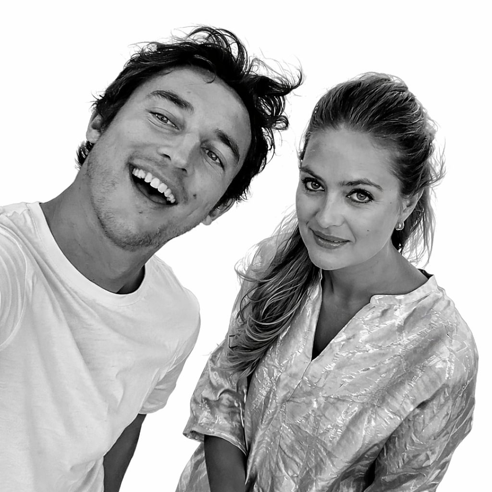
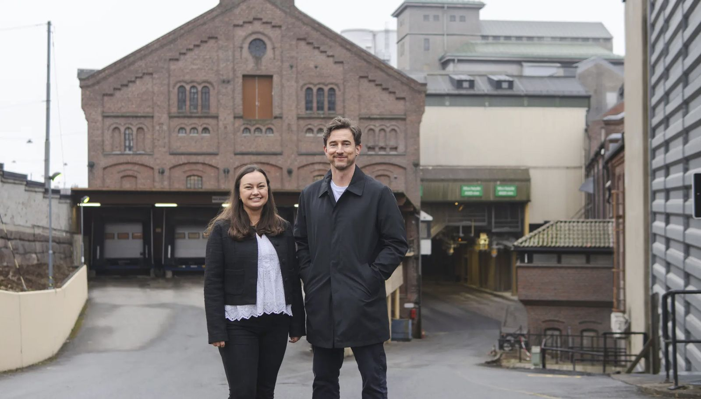

Erfaring. Korte linjer. Full gjennomføring.
SALO er et lite, erfarent kommunikasjonsmiljø for virksomheter som trenger gode vurderinger og arbeid som blir gjort ferdig. Vi kombinerer strategisk PR-rådgivning med pressearbeid, innholdsproduksjon, tekst og design, og jobber ofte tett integrert med kundens eget team.

Etablert i 2006
Ole Winther startet SALO i 2006, først som underleverandør til Burson-Marsteller – der han også vant den norske PR-bransjens pris for beste produktprofileringskampanje. Siden har byrået bistått norske virksomheter og internasjonale merkevarer med strategisk og operativ kommunikasjon i det norske markedet.
SALO er bygget for direkte samarbeid. Kunden møter rådgivere med lang erfaring fra første samtale og beholder den samme kontaktflaten gjennom oppgaven. Når leveransen krever flere fag, kobles faste samarbeidspartnere innen foto, film, design og produksjon på rundt kjernen.
Ole Winther
Ole Winther er PR-rådgiver, daglig leder i SALO og en av Norges mest erfarne rådgivere på markeds- og merkevare-PR, kommunikasjon og omdømme. Han har 20 års erfaring med PR, medier, tekst, merkevarer og strategisk kommunikasjon, og arbeider både med rådgivning og praktisk gjennomføring.
For mange kunder fungerer Ole som en løpende sparringpartner: Hva bør virksomheten si? Hvilke saker bør prioriteres? Hvor ligger risikoen? Og hvordan kan kommunikasjonen styrke posisjonen over tid? Når retningen er valgt, følger han arbeidet videre med budskap, pressearbeid og tekstproduksjon.
Linn Onarheim Winther
Linn Onarheim Winther er grafisk designer og kreativ leder for SALO, der hun har samarbeidet med Ole siden 2009. Hun har vært sentral i utviklingen av byråets arbeid med innhold, design, produksjon og visuell gjennomføring.
Linn kombinerer forståelse for kommunikasjon og merkevarer med omfattende designerfaring fra redaksjonelle konsepter, kundemateriell og produksjonsprosesser. Hun tar ledelsen i oppgaver der innhold, form og praktisk gjennomføring må fungere som en helhet.
TIGERSTADEN og den redaksjonelle erfaringen
Et tidlig kapittel i SALO-historien er livsstilsmagasinet TIGERSTADEN, som Ole og Linn utviklet for butikker, utesteder og hoteller i Oslo. Arbeidet ga tung, praktisk erfaring med hele den redaksjonelle og kommersielle kjeden: idé, innhold, intervju, foto, design, salg, trykk, produksjon og distribusjon.
Siden 2010 har hovedtyngden ligget på byråarbeid. Erfaringen fra magasinet er likevel fortsatt relevant, så mange år etter: SALO vurderer ikke tekst, design og distribusjon som separate øvelser, men som deler av kommunikasjonen mottakeren faktisk møter.
Boutique-modellen
SALO holder seg lite med vilje. Modellen gir korte linjer, raske avklaringer og direkte tilgang til erfarne rådgivere. Samtidig kan teamet utvides med fagfolk vi kjenner godt når oppgaven krever foto, film, design eller større produksjoner.
Kort sagt: Kunden får et miljø som er stort nok til å løse krevende oppgaver, men organisert slik at det alltid er tydelig hvem som har ansvaret og kjenner saken.
Når en virksomhet velger nytt PR-byrå, omtales det i bransjepressen. Under er valgene som er dokumentert utenfra.


01Hvem jobber kunden med i SALO?+
Kunden jobber direkte med Ole Winther og Linn Onarheim Winther, avhengig av oppgaven. Ved behov settes et team av relevante spesialister sammen, men SALO beholder ansvar og kontaktflate.
02Hvor lenge har SALO jobbet med PR og kommunikasjon?+
SALO ble etablert i 2006. Byrået har dermed 20 års erfaring med strategisk PR, mediearbeid, innhold, tekst, design og kommunikasjon for norske og internasjonale virksomheter.
03Har SALO kapasitet til større produksjoner?+
Ja. SALO skalerer teamet med faste samarbeidspartnere innen foto, film, design og produksjon. Kunden beholder samtidig én tydelig prosjekt- og rådgivningskontakt.
Trenger du et erfarent blikk på en kommunikasjonsutfordring, eller noen som kan få arbeidet ferdig?
Ta kontakt med oss, så finner vi tid for et effektivt arbeidsmøte.
post@salokommunikasjon.no